Deciphering Javascript Instantiation Patterns
javascript patternsSometimes it seems like Javascript has about a hundred different options for doing just about anything. While this flexibility can be powerful, it can also lead to confusion as it is sometimes unclear that several different constructs all essentially do the same thing. For example, Javascript has a variety of instantiation patterns, which can also be considered strategies for creating new classes:
- Functional
- Functional Shared
- Prototypical
- Pseudoclassical
Much has been written about these four styles already—check out the posts by Tyler McGinnis and Ian Lynon for a couple of particularly clear explanations. Here, I want to briefly compare and contrast the basic structure of each pattern for use as a quick reference and/or refresher for people who already know how and when to use each pattern.
All four patterns accomplish the same three objectives: 1. Declare a new object (outlined in orange) 2. Add properties common to all members of the class (also in orange) 3. Add methods common to all members of the class (outlined in green)
Below each function, I have also shown how each pattern is called upon to create new objects. Notice that functional, functional shared, and prototypical all use the same general code here, but the pseudoclassical pattern uses the keyword new. Additionally, the functional shared code here uses Underscore’s _.extend function.
| Pattern | General Structure | Example Code |
|---|---|---|
| Functional | 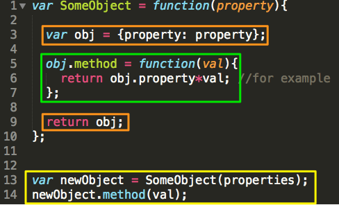 | 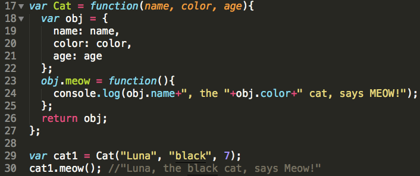 |
| Functional Shared | 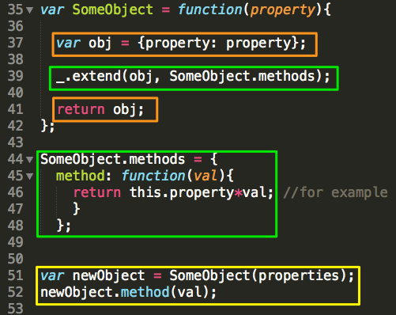 |  |
| Prototypal | 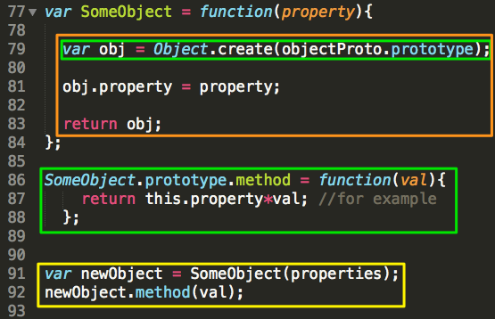 | 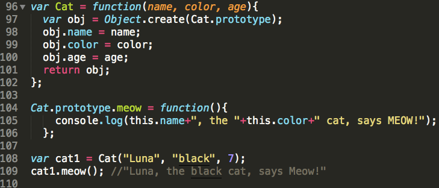 |
| Pseudoclassical | 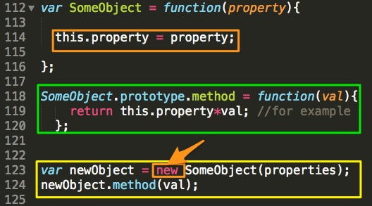 | 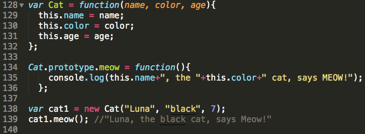 |
Again, each of these patterns are useful in different circumstances. In addition to the posts by Tyler McGinnis and Ian Lynon, Brett Hoyer presents the advantages and disadvantages of each pattern quite clearly on Hack Reactor’s blog.
In addition to the instantiation patterns shown above, Javascript allows for the use of function decorators. While these do not instantiate new objects, they are useful for modifying the properties and methods of existing objects. They can also be used to instantiate a new object if an empty object is passed in as one of the arguments, but this is far less efficient that using any of the class declaration patterns above.
There are two decorator patterns:
- Functional Object Decorator with Duplicate Methods
- Functional Object Decorator with Shared Methods
These two patterns look almost identical to the functional and functional shared patterns above, and have similar pros and cons. However, unlike the instantiation patterns, these must have an object passed in as one of their arguments.
| Pattern | General Structure | Example Code |
|---|---|---|
| Decorator with Duplicate Methods | 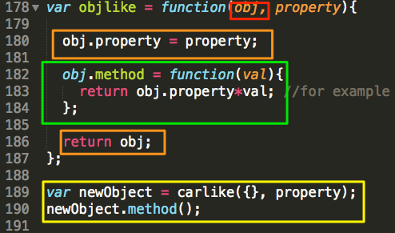 | 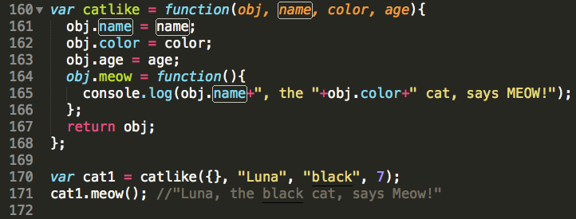 |
| Decorator with Shared Methods | 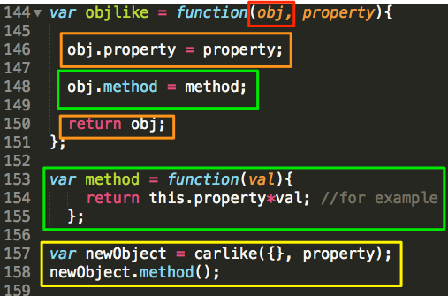 | 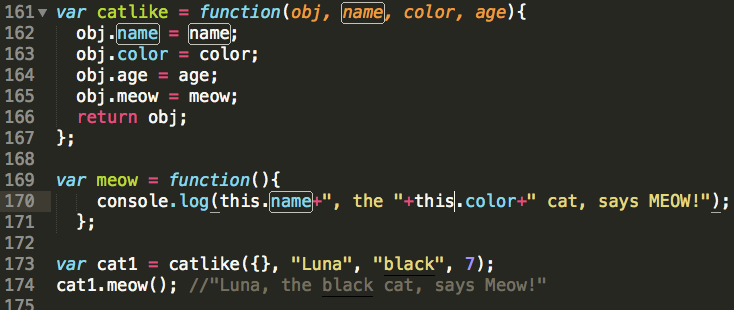 |
Much more can be said about all of these patterns — why some use thisand/or new, which are more efficient etc…— but I hope this is enough to help clarify the structure of each pattern, and to use as a quick reference for those who are already familiar with them.